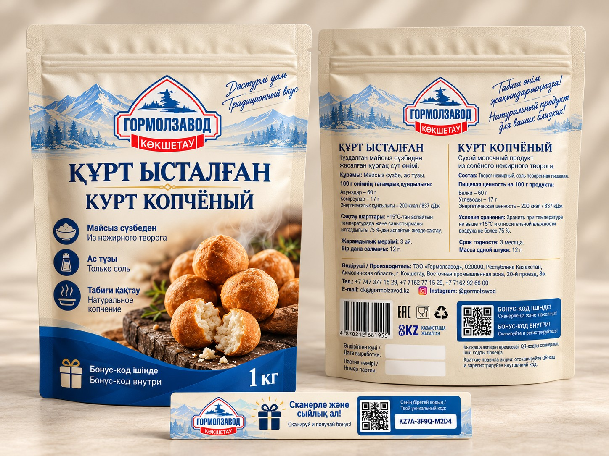

Концепция
Герметичный дой-пак с зип-замком, узнаваемым региональным дизайном и скрытым бонусным кодом.
Основа проекта
10 фотографий курта из SPAR, SMALL и небольшого магазина, снятых 28 октября 2026 года; сравнительная таблица и предварительный расчёт Купак.
Производство
Kupack: ориентир 160–180 тенге за штуку при минимуме 20 000 штук. Персональные коды не включены. Оценка второго производителя не получена.
Статус
Дизайнерская концепция; не печатный производственный оригинал. QR/CRM — демонстрация механики.